A cozy apartment doesn't need more stuff. It needs better choices. If your apartment feels a little cold, cramped, unfinished, or like you moved in yesterday and never quite unpacked, the right decor can genuinely change the whole mood.
The best cozy apartment decor ideas tend to focus on warmth, texture, lighting, and personality rather than simply filling every empty corner. That matters even more when you're working with a small living room, an awkward layout, rental walls, or limited storage.
The good news is that none of this requires a huge budget or a huge apartment. It just takes knowing where to actually put your attention.
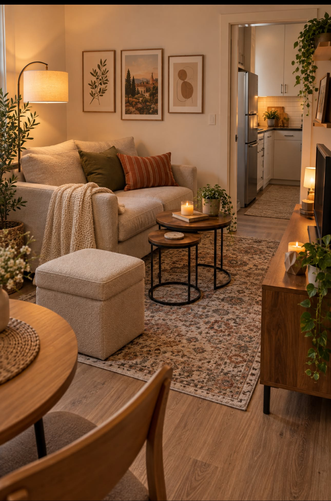
How to Make a Small Apartment Feel Cozy Without Looking Cluttered
This part can feel tricky. You want warmth, but you don't want the apartment to end up looking like a storage unit with throw pillows.
The trick is visual balance. Texture and personality can come in while the floor stays relatively clear and the important pieces get enough breathing room around them.
Keeping floors clear, leaning on multifunctional furniture, working in a few mirrors, prioritizing lighting, and sticking to a cohesive color palette are the basics that small-space design advice keeps coming back to, for good reason.
Giving every major item an actual job helps too. A storage ottoman can provide seating, hide blankets, and work as a coffee table all at once. A console can create an entryway moment while storing everyday clutter. A round dining table can double as a workspace. Scale and proportion matter more in a small space than almost anywhere else, and furniture that does two or three jobs will always beat five mediocre pieces squeezed into the same room.
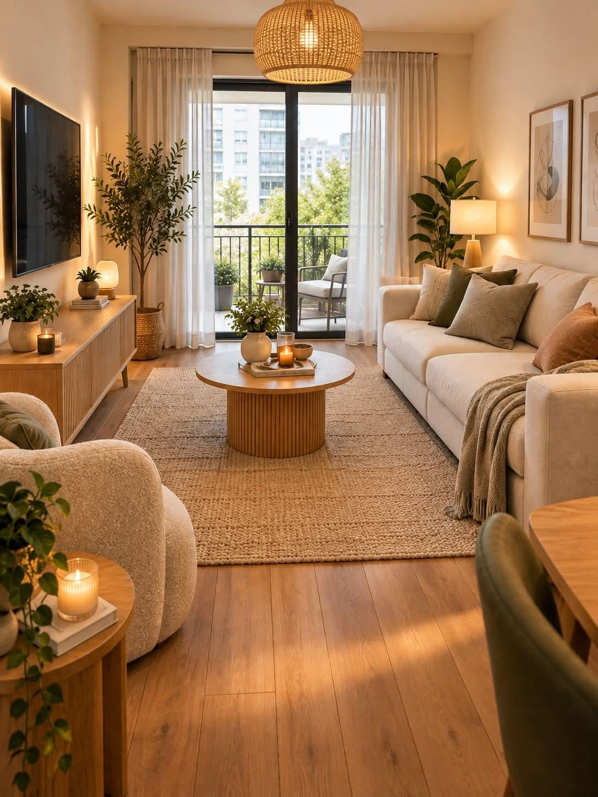
What Actually Makes an Apartment Feel Cozy
Cozy doesn't mean covering the sofa in twelve blankets and hoping for the best. It comes from layering things that make a room feel comfortable, lived-in, and visually connected.
Four things tend to matter most: lighting, texture, color, and scale.
Soft lighting can make a basic apartment feel dramatically warmer. Rugs and curtains soften hard surfaces. Warm neutrals keep a room feeling calm without tipping into boring. Personal pieces are what give the whole space a sense of identity.
A room should ultimately reflect the person living in it, which matters even more in an apartment, since you usually start with someone else's decisions already in place: white walls, standard flooring, basic cabinets, builder-grade lighting. The decor is what actually makes the apartment yours.
Instead of asking what to buy first, it helps to ask what feeling you actually want when you walk through the door. That question tends to lead to much better decorating decisions than a shopping list ever does.
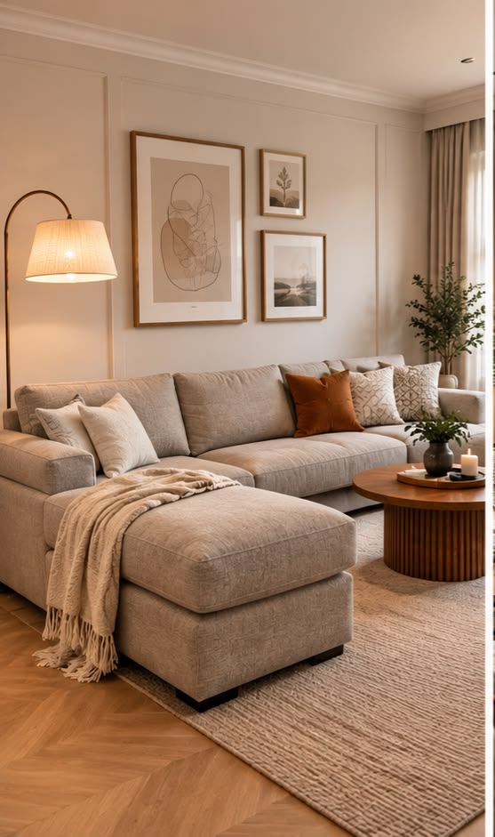
22 Cozy Apartment Decor Ideas
1. Give the Apartment One Big Personality Moment
Every cozy apartment needs something that makes you stop and actually look.
Maybe it's a deep green wall. Maybe it's a huge vintage mirror, a dramatic piece of art, or an incredible velvet chair you absolutely didn't need but somehow couldn't leave behind.
The important thing is choosing one or two strong focal points instead of making every object compete for attention at once. Small spaces can actually make a bold piece work harder, since you see it immediately, and a large piece of art or dramatic drapery can change the whole character of a plain white-box apartment and make it feel genuinely custom.
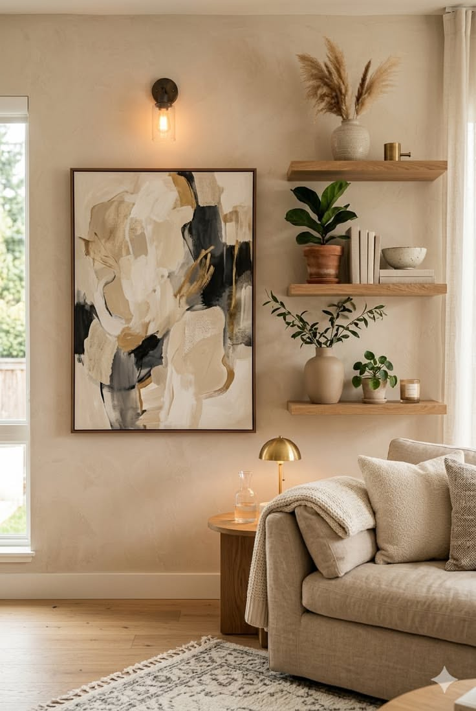
2. Make the Bathroom Feel Cozy Too
Bathrooms often get the least decorating attention of any room, which makes them an easy opportunity.
Plush towels, a warm bath mat, a small plant, attractive containers, and framed artwork that can handle the humidity all help. Warm bulbs instead of harsh cool lighting make a noticeable difference too, and a wood stool or small teak-style accessory adds a last bit of warmth.
Layered lighting and functional storage genuinely improve a small bathroom's experience without needing a single extra square foot.
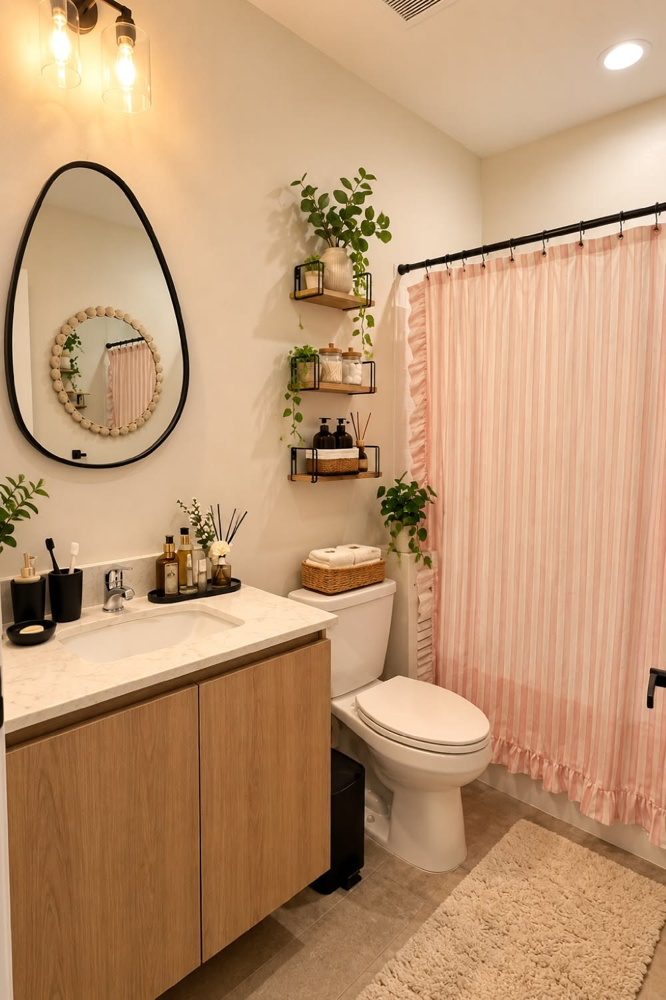
3. Make the Kitchen Feel More Personal
Apartment kitchens often come with limited personality built in, but that's fixable without renovating a single cabinet.
Attractive cutting boards, ceramic bowls, a small plant, linen towels, or a wooden utensil holder all add character. Warm lighting underneath the cabinets helps too, if the setup allows for it.
Keeping the counters reasonably clear matters just as much as adding the right objects. A few beautiful items create character. Twenty-seven of them just create a cleaning problem.
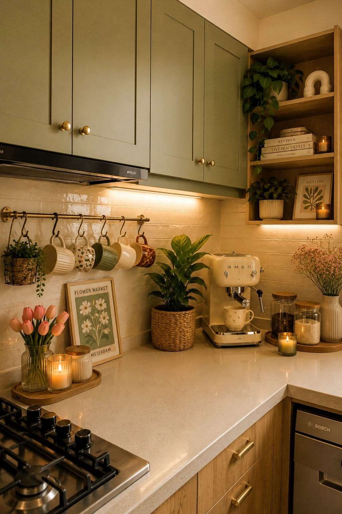
4. Use Textured Wall Decor
Blank walls can make an apartment feel temporary, like nobody's quite settled in yet.
Expensive artwork isn't required. Woven wall hangings, baskets, framed textiles, wood panels, sculptural objects, or layered artwork all add texture instead.
Renters can lean on removable solutions to build in personality without making anything permanent. Combining one large piece with smaller objects around it also tends to work better than covering every single inch of wall.
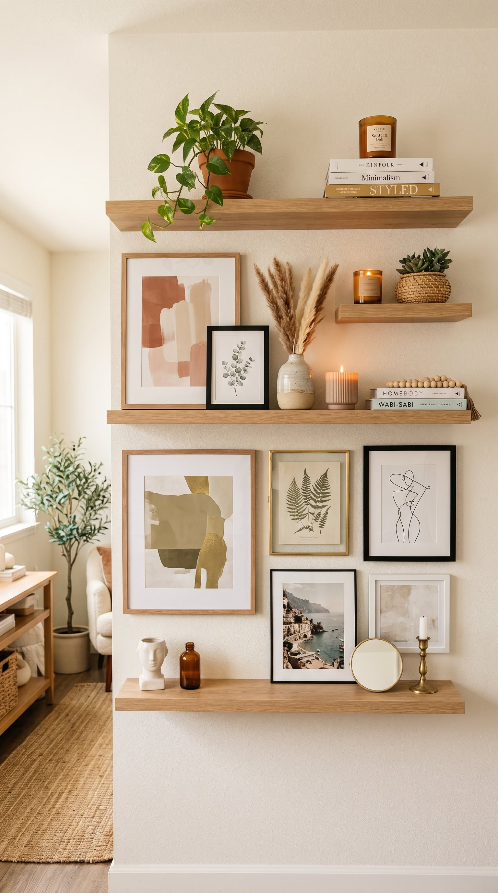
5. Carve Out a Small Dining Nook
A formal dining room was never actually required for this.
A compact round table fits beautifully into an apartment corner. Pair it with two or three comfortable chairs, and hang a pendant above it if the ceiling and rental rules allow.
A round table also makes movement easier in a tighter layout, since it eliminates sharp corners entirely. Using a window-adjacent area strategically, and letting the natural light guide the layout, works just as well for a small dining spot as it does for any other part of a studio apartment.
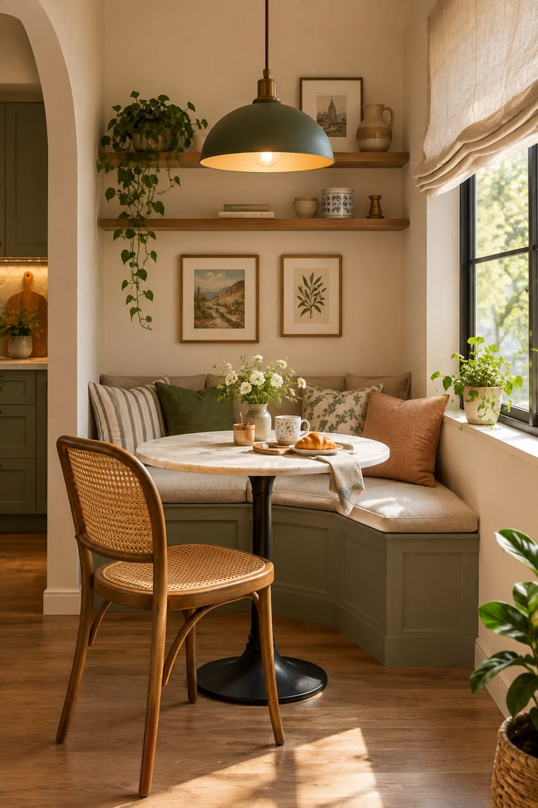
6. Add Texture With Baskets
Baskets combine practicality and texture better than almost anything else on this list.
Use them for blankets, pillows, magazines, toys, shoes, or whatever miscellaneous items otherwise wander around the apartment on their own.
Natural woven baskets work beautifully with neutral interiors, since they add texture without introducing another strong color. One beside the sofa and another underneath a console or bench is usually plenty.
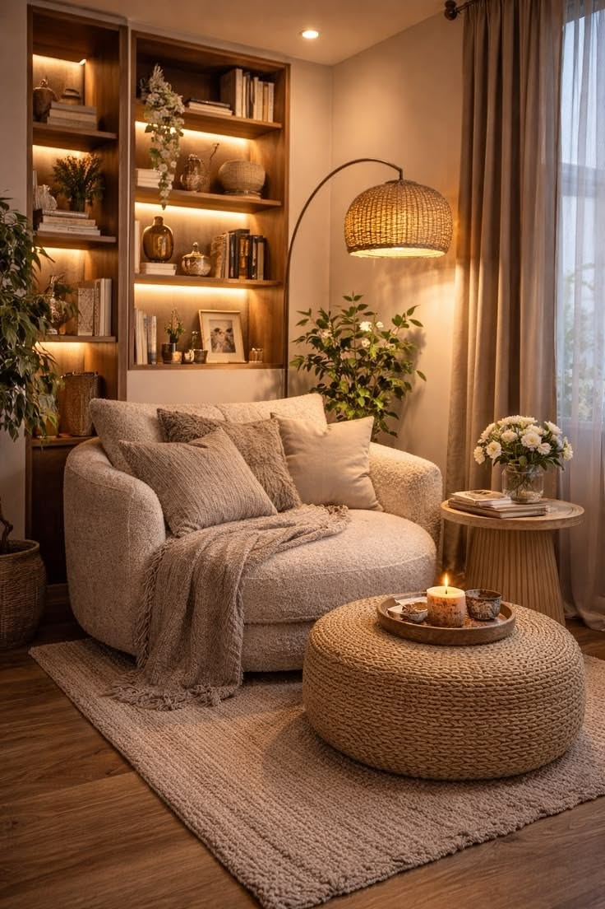
7. Turn the Coffee Table Into a Styled Moment
A coffee table deserves more attention than a remote control and yesterday's mug sitting on it.
A stack of books, a small ceramic object, a candle, and a low bowl cover the styling, with plenty of empty space left around the arrangement itself.
Objects at different heights make the whole thing feel more natural, and there should always be enough room left to actually set a coffee down. Decor should support your life, not get in the way of it.
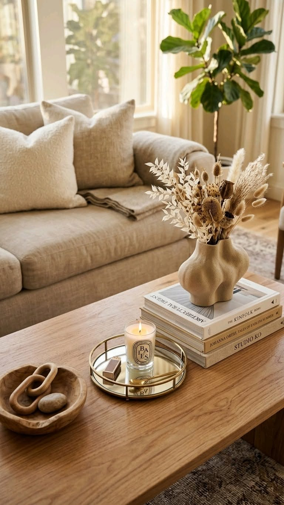
8. Use One Deep Color for Contrast
Cozy doesn't always have to mean light.
A warm apartment can absolutely handle deeper shades, chocolate brown, olive green, charcoal, burgundy, terracotta, or deep navy, used as one accent through a chair, a piece of artwork, cushions, a lamp, or a small cabinet.
Small rooms don't need to stay pale by default. Plenty of character comes from bold color and a dramatic element or two, as long as the contrast stays controlled rather than eliminated entirely.
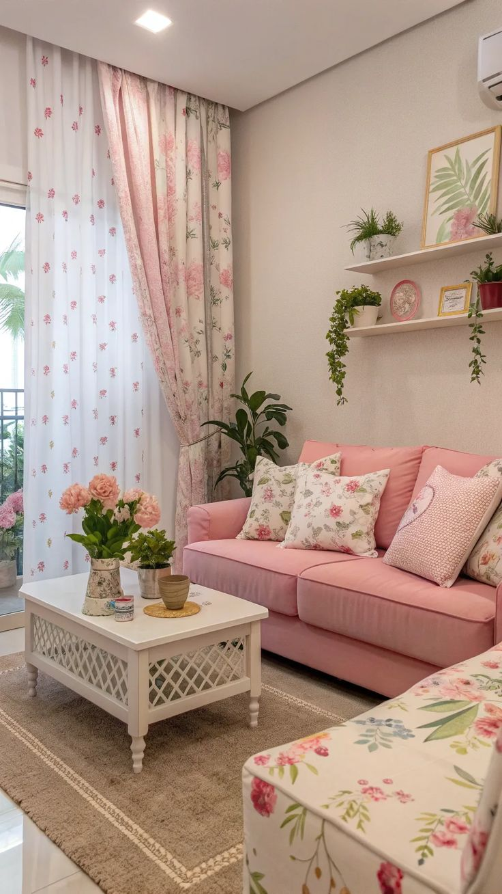
9. Mix Vintage and Modern Pieces
This remains one of the best ways to make an apartment feel genuinely personal.
Pair a contemporary sofa with a vintage side table. Add an antique-looking mirror above a modern console. Place a modern lamp beside an older wooden chair.
Mixing vintage and new pieces is what keeps a minimal apartment feeling inviting rather than sterile, and the combination also stops the whole space from looking like it came from one single, extremely enthusiastic shopping trip.
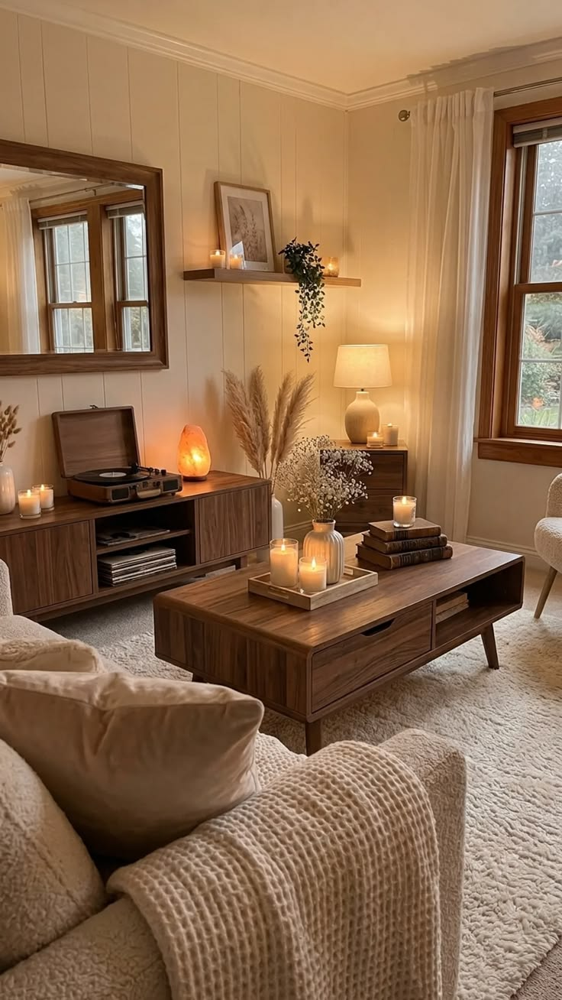
10. Add Plants for Natural Texture
Plants bring softness and real life into an apartment in a way almost nothing else can.
A tall plant works well in an empty corner with good natural light. In a dimmer apartment, low-light varieties or realistic artificial plants cover the same ground.
Placing plants at different heights, rather than lining them all up along one shelf, tends to look better. A large plant beside a sofa can also soften an otherwise empty corner without adding any real clutter.
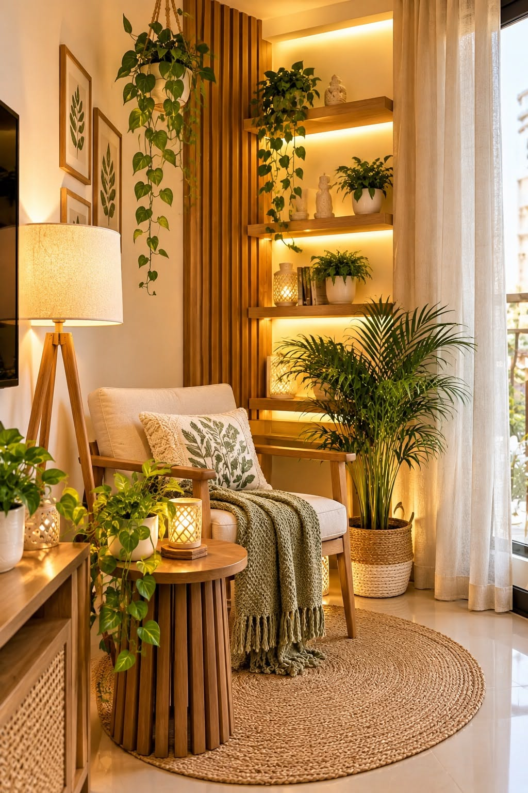
11. Create a Warm Entryway
The entrance sets the mood for the entire apartment, even when it's just a narrow strip of wall.
A narrow console, a mirror, a few hooks, a basket, and a small lamp are enough to build a functional entryway out of almost nothing.
Keeping everyday items contained matters most here. Keys, shoes, bags, and mail can turn a beautiful apartment into chaos fast. A small tray on the console gives keys a home, and a basket underneath hides shoes or reusable bags. Simple, and genuinely effective.
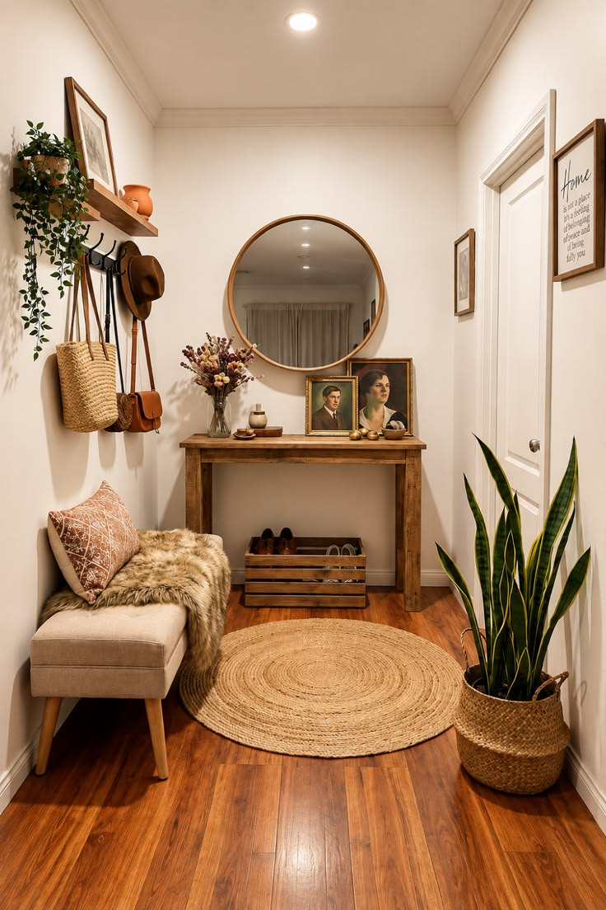
12. Use Wall-Mounted Storage
Small apartments need vertical thinking, especially once floor space starts disappearing fast.
Floating shelves, wall-mounted cabinets, peg rails, picture ledges, narrow bookcases, and floating nightstands all move storage up off the floor and onto the walls instead.
Getting things up and using vertical space matters most in an apartment with limited closets, and floating shelves in particular add real storage without visually weighing the room down the way a bulky cabinet would.
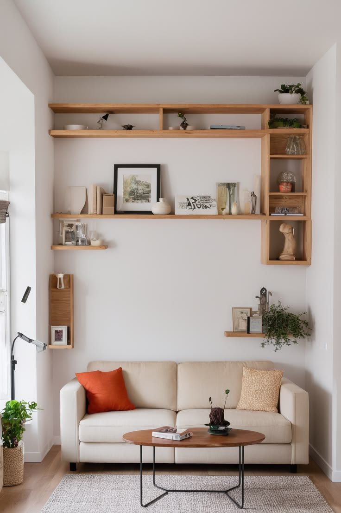
13. Layer the Bedroom With Soft Bedding
The bedroom should feel softer than the rest of the apartment.
Simple bedding in cream, white, beige, muted brown, or dusty earth tones forms the base, layered with a quilt, a blanket, and a few pillows on top.
Slightly different shades, rather than one perfectly matched set, tend to feel more relaxed, a cream duvet with oatmeal linen pillows and a warm brown throw does more than a flawlessly coordinated bedding set ever could. Two bedside lamps, if the space allows, add a symmetry that instantly makes a small bedroom feel more intentional.
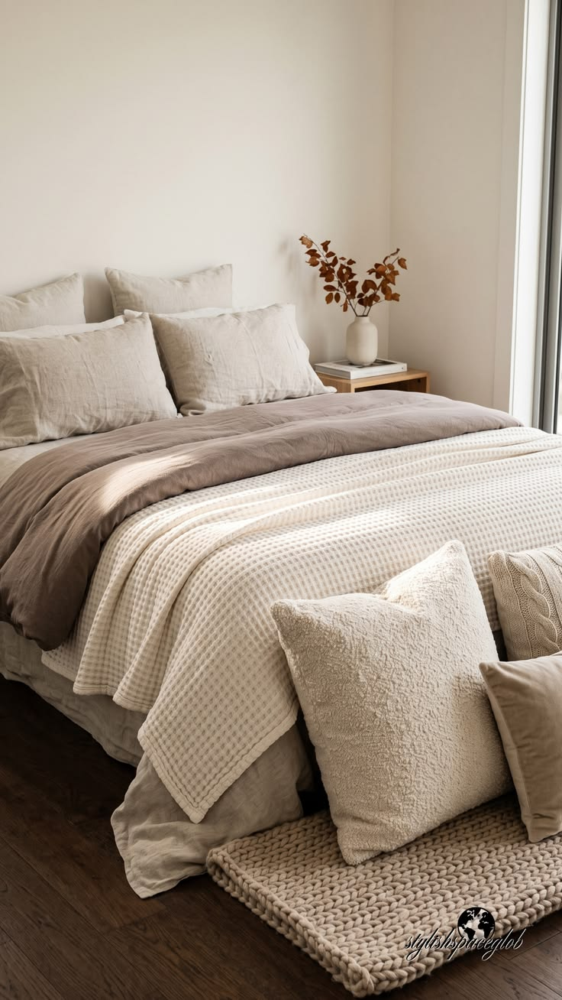
14. Add a Statement Mirror
Mirrors can make a small apartment feel brighter and noticeably more spacious.
A large mirror placed opposite or near a window reflects natural light back into the room. A decorative mirror above a console, fireplace, or sofa works just as well elsewhere.
Positioning a mirror to reflect available light genuinely creates the impression of more space. One substantial mirror usually beats several tiny ones, especially once the room already has a lot going on.
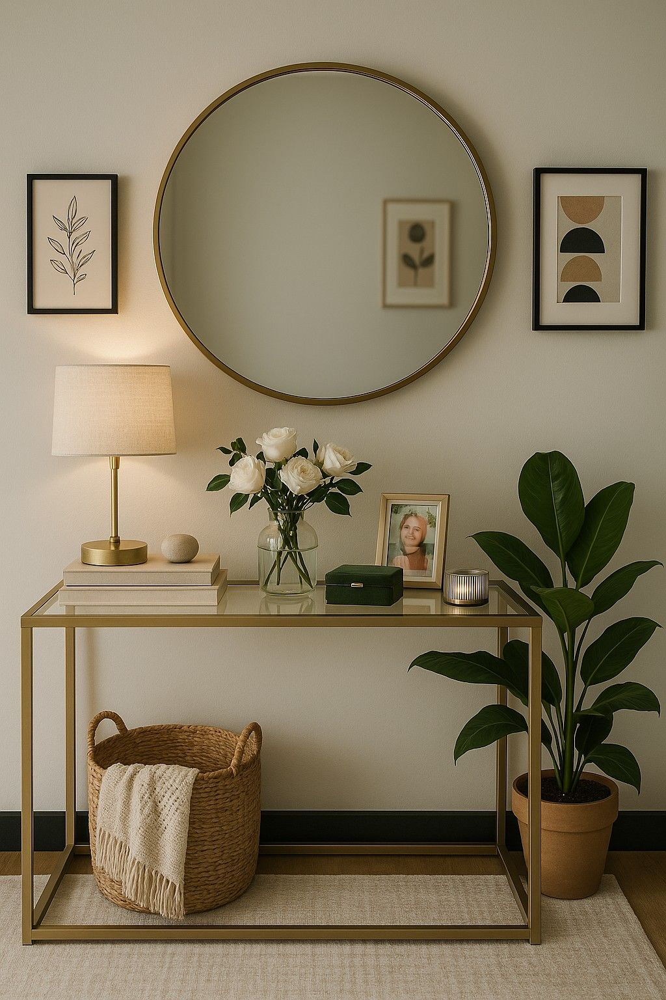
15. Make the Sofa Feel Extra Cozy
The sofa is probably the largest visual element in the living room, so it's worth making it count.
Two or three different pillow textures work better than ten pillows in the same fabric. A knitted or woven throw across one side finishes the look.
Mixing linen, boucle, cotton, velvet, and chunky knits creates real visual depth. A mountain of cushions isn't actually necessary. Texture creates coziness far more effectively than quantity ever does.
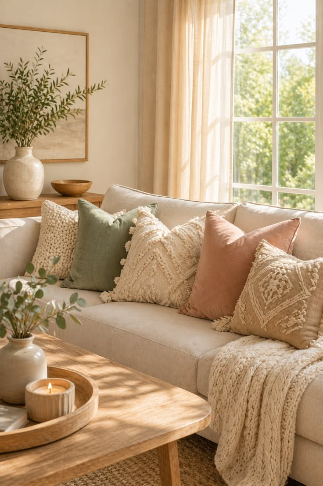
16. Build a Gallery Wall With Meaningful Art
The walls should tell people something about who actually lives there.
Rather than buying random prints just because they match the sofa, mix in artwork that genuinely means something, vintage prints, family photographs, small paintings, travel memories, botanical artwork, and hand-drawn sketches all work together.
Keeping the frames within a loose color family holds the whole wall together visually. A gallery wall also works especially well in an apartment, since it adds personality without eating into any actual floor space.
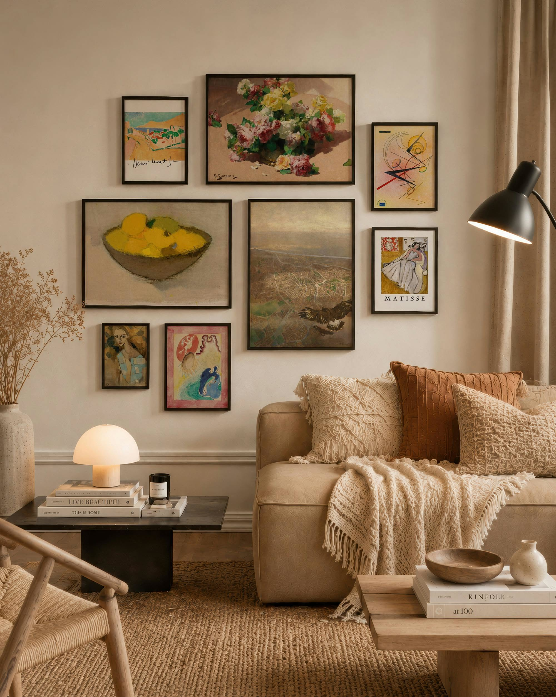
17. Build a Cozy Reading Corner
An entire extra room was never required for a reading nook.
A comfortable chair, a small side table, a floor lamp, and a soft throw turn an unused corner into one almost instantly. Placing the chair near a window, if the daylight's good, and adding a small basket for books or blankets, finishes it off.
Furniture, lighting, and vertical space can carve out a distinct little zone even inside a genuinely tiny apartment. Why leave a corner empty when it could become a favorite place to sit?
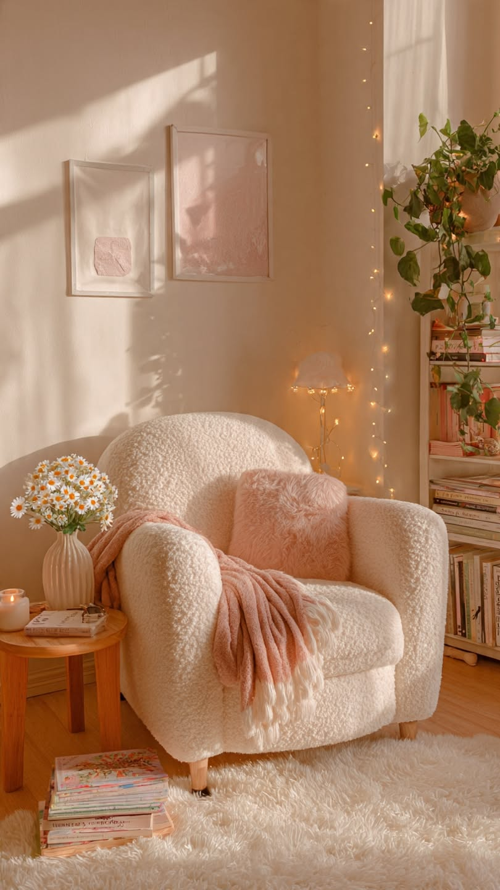
18. Bring In Natural Wood
Natural wood adds warmth almost instantly, wherever it shows up.
A coffee table, side table, shelving unit, picture frames, stools, cutting boards, or even a small bench all introduce it easily. Oak, walnut, pine, and other light natural woods work beautifully together.
Matching every wooden piece exactly isn't necessary, and a bit of variation actually creates a more collected look. A warm wood coffee table against a cream sofa does more for a cozy apartment than a whole pile of decorative objects ever could.
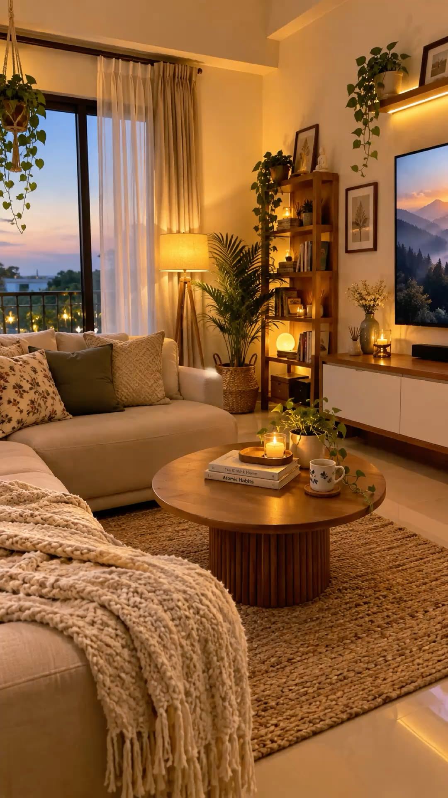
19. Decorate With Soft Curtains
Bare windows make an apartment feel unfinished faster than almost anything else.
Curtains installed higher and wider than the actual window frame draw the eye upward and make the window feel more substantial, wherever the layout allows for it.
Linen or linen-look curtains in ivory, cream, oatmeal, or warm beige suit this look especially well. Curtains that lightly pool or skim the floor also soften the hard architectural lines an apartment often has.
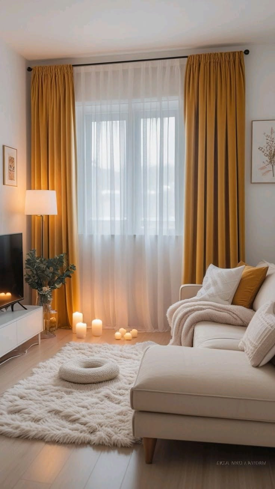
20. Add a Large Area Rug
A rug can completely change how an apartment actually feels underfoot and visually.
A rug large enough to visually connect the main furniture works far better than a tiny one floating awkwardly in the middle of the room.
A larger rug makes the seating area feel intentional while adding real softness underfoot. Warm beige, muted patterns, vintage-inspired designs, or subtle geometric rugs suit a cozy space well, and a quieter rug is the better call whenever the furniture already carries a lot of personality on its own.
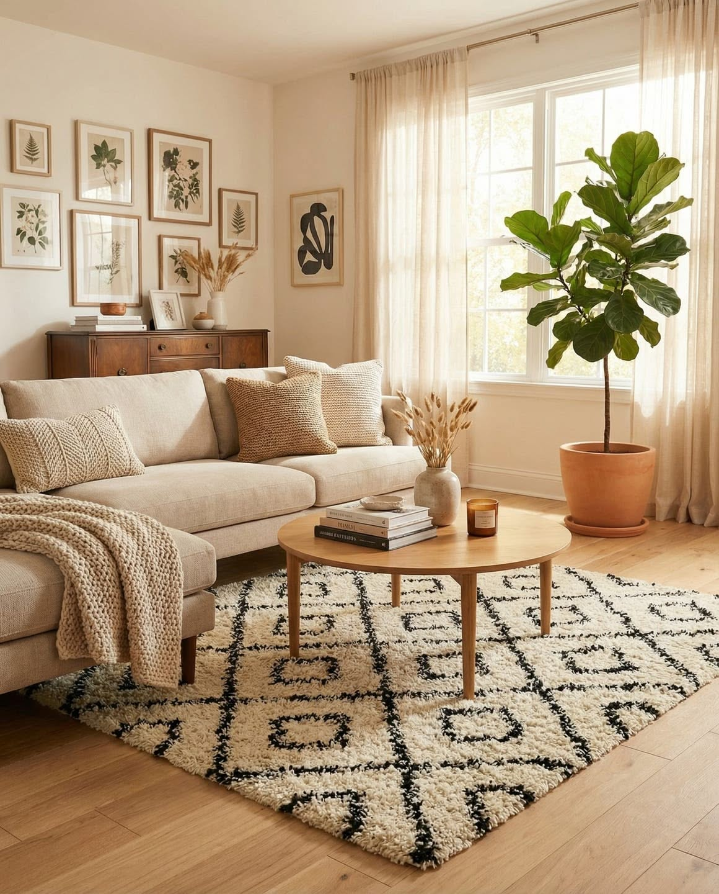
21. Layer Several Light Sources
One ceiling light rarely creates a cozy apartment on its own.
Layering lighting instead, combining overhead light with table lamps, floor lamps, wall sconces, and smaller decorative lights, does far more work. Multiple light sources matter especially in small spaces, which can turn dark fast once natural light is limited.
A warm table lamp beside the sofa and another near a reading chair or console can soften a whole room without changing a single piece of furniture. That sad little blue-white ceiling bulb can officially retire.
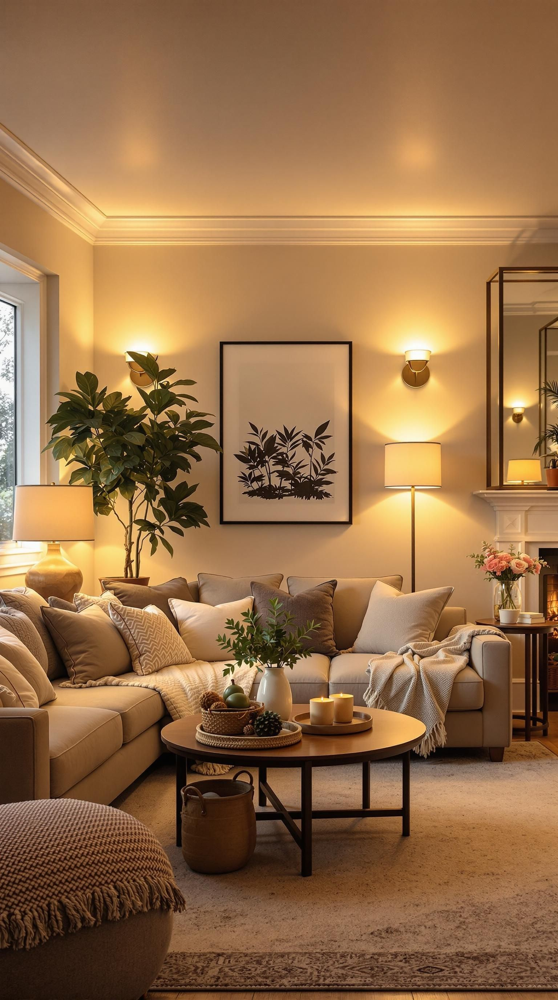
22. Create a Warm Neutral Living Room
Warm neutrals make one of the easiest starting points for cozy apartment decor.
Creamy white, beige, taupe, warm gray, mushroom, caramel, and soft brown build a relaxed backdrop with plenty of room to layer different textures on top.
A warm off-white wall paired with a beige sofa, a natural wood coffee table, a woven rug, and darker brown accents reads as collected rather than overly coordinated. Every beige shade doesn't need to match exactly either. Slight variation actually gives a room more depth.
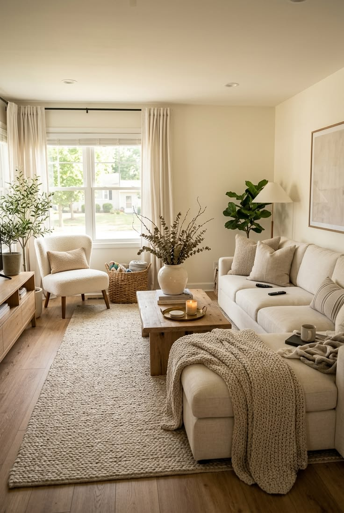
How to Pull These Ideas Together
Decorating an apartment from scratch doesn't mean buying everything at once.
Starting with the foundation first makes the most sense: a comfortable sofa, an appropriately sized rug, warm lighting, curtains, and one substantial piece of storage.
Texture comes next, through pillows, throws, baskets, wood, and plants. Personality comes last, through artwork, vintage pieces, books, photographs, and objects that actually mean something personally.
That order matters more than it seems. Spending on decorative pieces before solving the room's basic problems is an easy, expensive mistake. Settling on a simple color palette before shopping at all, a dominant neutral, a secondary warm tone, and one deeper accent, helps completely different furniture pieces feel like they already belong together.
The Biggest Mistake Worth Avoiding
Trying to make every single inch of the apartment look decorated is the biggest trap in all of this.
Empty space matters. The eyes need somewhere to rest, the furniture needs room to breathe, and the walking paths need to stay genuinely clear.
Intentional furniture selection, clear floors, a cohesive palette, and pieces that actually serve a useful function keep coming up in small-space advice for good reason, and that same approach happens to make cleaning easier too, which might be the least glamorous decorating tip here, but it matters just as much.
A cozy home should feel relaxing to actually live in, not just nice to photograph.
Final Thoughts on Cozy Apartment Decor
The best cozy apartment decor ideas never require a massive budget, a giant floor plan, or a full renovation.
Start with warm lighting. Add texture. Use a cohesive color palette. Bring in natural materials. Choose furniture carefully. Keep clutter under control. Then add whatever personal details actually make the apartment feel like yours.
Most importantly, the size of an apartment shouldn't dictate how much personality it's allowed to have. A room should reflect the person living in it, full stop, and an apartment doesn't need to look bigger, fancier, or more expensive than it actually is. It just needs to feel good the moment you walk through the door.
And if a beautiful throw blanket, a warm lamp, and one slightly unnecessary vintage chair help get it there, that's a pretty reasonable way to spend a weekend.